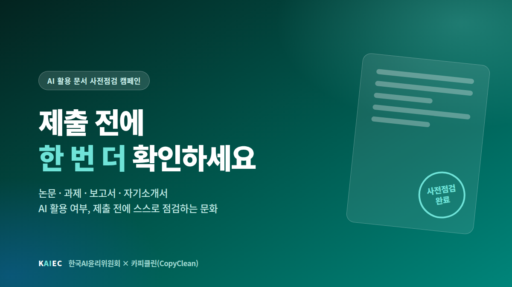

책임성
AI가 만든 결과에 대한 책임은 사람에게 있습니다. 활용 과정과 결과를 설명할 수 있어야 합니다.
한국AI윤리위원회는 생성형 AI 시대의 책임 있는 AI 활용과 건전한 AI 윤리 문화 확산을 위해 교육·연구·캠페인·대외협력 활동을 수행합니다.
생성형 AI는 이미 학습·연구·업무의 일상이 되었습니다. 그러나 '어디까지 써도 되는가'에 대한 기준은 아직 정리되지 않았습니다. 위원회는 그 기준을 함께 만들고 알리는 일을 합니다.
AI가 만든 결과에 대한 책임은 사람에게 있습니다. 활용 과정과 결과를 설명할 수 있어야 합니다.
AI를 사용했다면 숨기지 않고 밝힙니다. 어디에, 어떻게 썼는지 드러내는 것이 신뢰의 출발점입니다.
AI 활용이 특정 집단에 불리하게 작동하지 않도록 살피고, 편향을 인식하며 사용합니다.
기술 접근성의 차이가 새로운 격차가 되지 않도록, 누구나 이해할 수 있는 언어로 알립니다.
선언에 머무르지 않고 현장에서 실제로 작동하는 활동을 지향합니다.
생성형 AI를 활용하는 개인과 조직이 지켜야 할 기본 원칙을 정리하고 확산합니다.
온라인 캠페인, 카드뉴스, 영상, 강의 자료 등 누구나 쉽게 접근할 수 있는 형태로 AI 윤리 콘텐츠를 제작·배포합니다.
AI 윤리에 관심 있는 개인이 온라인·재택 방식으로 참여할 수 있는 「AI 윤리 파트너」 제도와, 분야별 전문성을 바탕으로 자문하는 전문위원 제도를 운영합니다.
대학, 기업, 협회, 연구기관 등과 업무협약을 체결하고 공동 캠페인·교육·연구를 추진합니다.
논문·과제·보고서 등 AI를 활용해 작성한 문서를 제출 전에 스스로 점검하는 문화를 확산합니다.
국내외 AI 윤리 기준, 관련 정책 동향, 사회적 쟁점을 정리해 공유합니다.
AI 윤리에 관심 있는 누구나 온라인·재택 방식으로 참여할 수 있는 위원회의 대표 참여 제도입니다.
거창한 자격이나 경력이 필요하지 않습니다. AI를 쓰는 사람이라면 누구나 AI 윤리를 알리는 주체가 될 수 있습니다.
논문·과제·보고서·자기소개서 등 다양한 문서를 대상으로 AI 활용 여부를 사전에 확인할 수 있도록 지원하는 AI 문서 분석 서비스입니다.
위원회는 카피클린과 함께 AI 활용 문서의 사전점검과 책임 있는 AI 활용 문화 확산을 위한 캠페인·제휴 활동을 진행합니다.
위원회의 활동과 주요사업, AI 윤리 파트너 제도, 강의·교육 신청, 제휴 현황을 안내하는 공식 홈페이지를 개설했습니다.
자세히 보기 →AI 윤리 문화 확산에 함께할 위원과 파트너를 상시 모집합니다. 전 과정 온라인·재택으로 참여할 수 있으며 위촉장과 활동증명서가 발급됩니다.
자세히 보기 →
제휴 서비스 카피클린과 함께 논문·과제·보고서·자기소개서를 제출하기 전 AI 활용 여부를 스스로 점검하는 문화를 확산하는 캠페인을 진행합니다.
자세히 보기 →